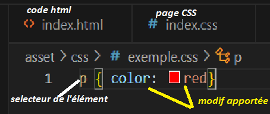
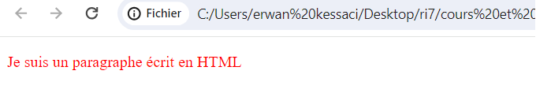

principe general
Le CSS (Cascade Style Sheets), ou "feuilles de style en cascade", est un élément qui viendra
styliser
notre page. Ce language, a l'inverse du HTML, ne contiendra que peu ou pas d'informations
brutes,
mais il viendra styliser le rendu visuel de notre code HTML.
Un fichier CSS sera toujours lié avec la page HTML qu'il viens styliser, il n'a pas d'interet
tout
seul.
Structure du code
Il existe une grande diversité d'utilisation du CSS, permettant au developpeur de mettre en
avant
son aspect créatif.
En reprennant mon premier exemple, je vais maintenant venir styliser mon paragraphe (élément p)
de
la sorte :

Nous pouvons maintenant observer le rendu, apres modification en CSS

Il existe de nombreux selecteur permettant un eventail très large de possibilité tels que :
Modificateur de police : p {font-family: nom de la police}
Modificateur de l'arière plan : p{background-color:couleur}